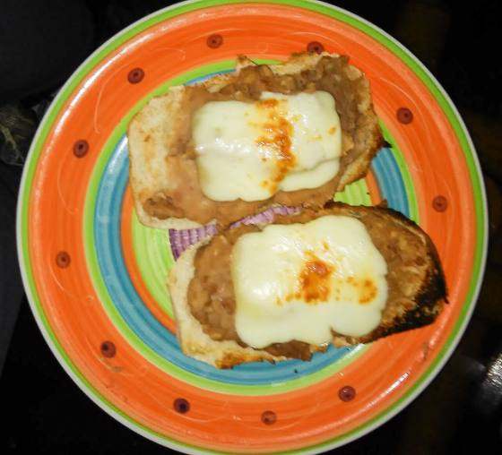
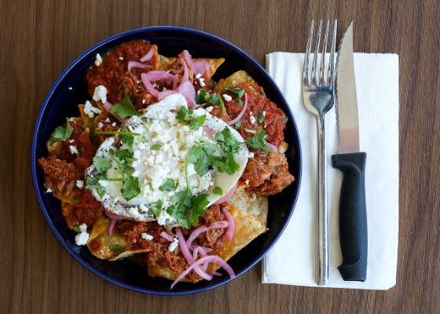

Cuidado Personal
Skincare
Cabello
Salud
Ejercicio
Comida
Ojos
Mi Comida
Desayunos
Cenas
Plan Masa Muscular
Registro Diario
Martes 1 de septiembre
Tu comida del día12 desayunos · 12 cenas, sin tus disparadores
186g
Meta de proteína
3,115kcal
Meta del día
3
Vas a cocinar

15 MIN
Molletes de frijol con queso panela
420 kcal24 g
ver

18 MIN
Chilaquiles de tortilla horneada con pollo
560 kcal44 g
ver

25 MIN
Salmón al horno con papa y ensalada
620 kcal46 g
ver
10 MIN
Tacos de huevo con jamón de pavo
440 kcal32 g
ver
5 MIN
Yogurt griego con granola y pera
400 kcal22 g
ver
12 MIN
Huevos revueltos con nopales
430 kcal30 g
ver
8 MIN
Sándwich de pechuga con aguacate
520 kcal38 g
ver
12 MIN
Omelette de claras con champiñones
340 kcal34 g
ver
5 MIN
Requesón con papaya y miel
380 kcal28 g
ver
12 MIN
Huevos al albañil
470 kcal30 g
ver
8 MIN
Avena de amaranto con plátano
520 kcal22 g
ver
14 MIN
Quesadillas de champiñón con pollo
500 kcal42 g
ver